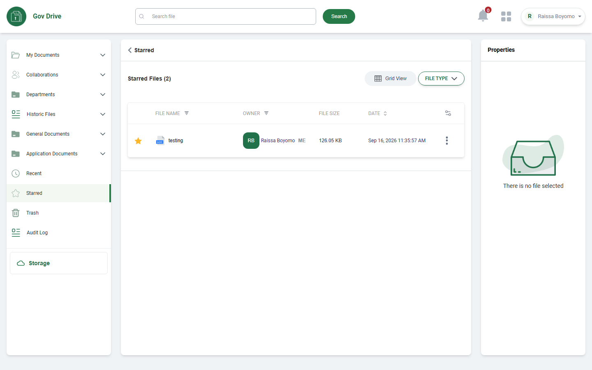
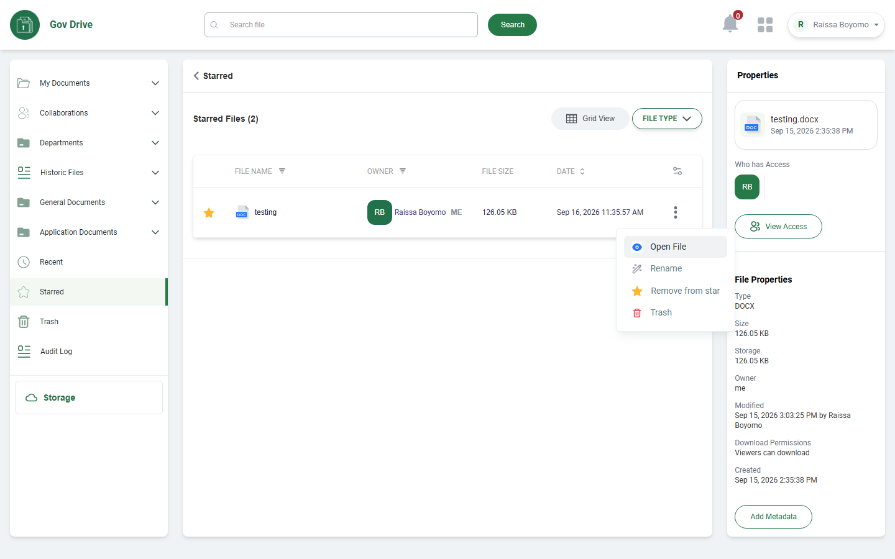
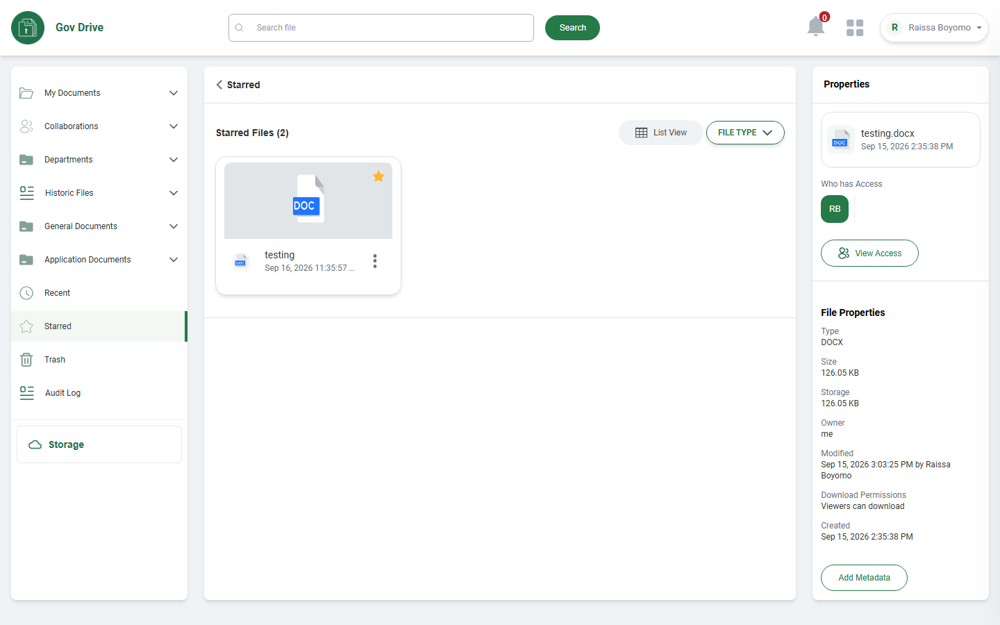
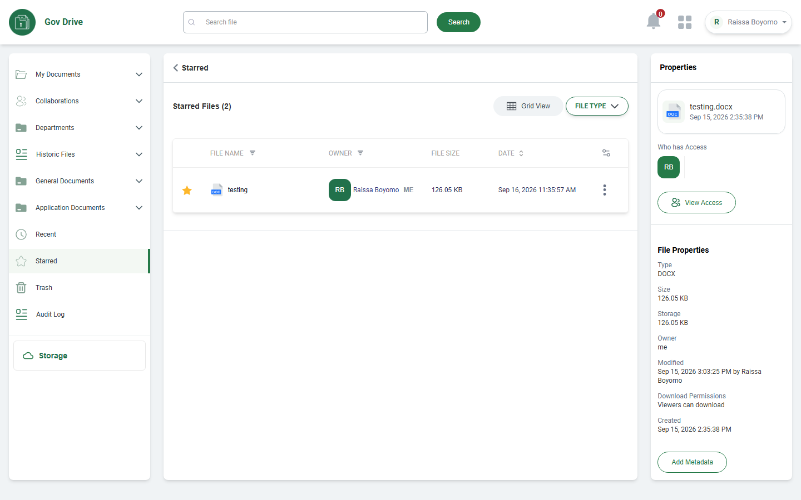

✓ STARRED DOCUMENT MODULE UAT COMPLETED
UAT Execution Report: STARRED DOCUMENT Module
Executed in strict accordance with the Excel Test Script (CICOD DRIVE TEST SCRIPT.xlsx, Rows 479 to 516) against Target 3 Environment (cicodsaasstaging.com / tenant: cicodecms).
Total Scenarios
5
Total Test Rows
38
Functional Passed
13
Documented Gaps / Omissions
25
Scenario 1: STARRED DOCUMENT NAVIGATION & RECORDS TABLE
Rows 479 - 480
| Row | Steps to Reproduce | Expected Result | Actual Result (Live Execution) | Deviations & Naming Notes | Status | Screenshot Evidence |
|---|---|---|---|---|---|---|
| 479 | Click on starred on the side menu | Should display the starred documents |
Starred section accessed directly via the left sidebar menu. Navigation indicator updates with active green border. Header displays "Starred", subheader displays "Starred Files (2)", and document table is loaded. |
[Script Label Clarification]: Row 479 in Excel script copied "recent document" text from previous module; validated here for Starred section navigation. |
PASSED |

|
| 480 | Verify the starred folders/files in the table | Should display the starred records |
Starred records rendered in table with gold star badge, file name ("testing"), owner ("RB Raissa Boyomo ME"), size ("126.05 KB"), creation/access timestamp ("Sep 16, 2026 11:35:57 AM"), and 3-dots action menu. |
None. Starred documents are displayed with complete tabular columns. |
PASSED |
 |
Scenario 2: FILE CONTEXT ACTIONS & STAR REMOVAL
Rows 481 - 488
| Row | Steps to Reproduce | Expected Result | Actual Result (Live Execution) | Deviations & Naming Notes | Status | Screenshot Evidence |
|---|---|---|---|---|---|---|
| 481 | Click on the action button | Should display a drop-down list containing preview file, Open file, Get file link, share file remove from star and download file |
Clicking the 3-dots action button on the starred file opens a context menu displaying 4 options: "Open File", "Rename", "Remove from star", and "Trash". Options Preview, Download, Get file link, and Share file are omitted in this build. |
[Menu Structure & Naming]: Dropdown provides Open File, Rename, Remove from star, and Trash. Direct download, share, and link generation omitted. |
PARTIAL / DEVIATION |
 |
| 482 | Click on preview file button | Should display the file |
No dedicated "Preview File" menu item exists in the Starred action dropdown. File viewing is initiated via "Open File" (Row 484) or Grid View cards (Row 510). |
[Feature Not Implemented in Menu]: Dedicated preview button missing from dropdown. |
NOT IMPLEMENTED IN CURRENT BUILD |
No UI Option View Menu Proof
|
| 483 | Click on download button | Should download the file |
Direct "Download" action is omitted from the Starred document row context menu. |
[Feature Not Implemented in Menu]: In-line download option missing from Starred document action list. |
NOT IMPLEMENTED IN CURRENT BUILD |
No UI Option View Menu Proof
|
| 484 | Click on open file | Should open the file |
Clicking "Open File" in the dropdown invokes the in-app document viewer dialog. |
None. Directly supported action. |
PASSED | |
| 485 | Click on get file link button | Should display the file link |
Option "Get file link" is not available in the Starred document row context menu. |
[Feature Not Implemented in Menu]: Link sharing generator omitted from Starred row actions. |
NOT IMPLEMENTED IN CURRENT BUILD |
No UI Option View Menu Proof
|
| 486 | Click on copy link button | Should be able to copy and paste the link |
Action blocked due to missing "Get file link" parent control in Starred view. |
[Prerequisite Blocked]: Cannot test copy link without get link generator. |
BLOCKED |
No UI Component (Unimplemented) |
| 487 | Click on remove from the star | Star should be removed from the file |
Context menu displays "Remove from star" with star icon. Clicking unstars the file and removes it from the Starred view. |
None. Directly supported and functional. |
PASSED | |
| 488 | Click on download file button | File should be downloaded |
Duplicate test step from Row 483. Direct download is not available in Starred context menu. |
[Feature Not Implemented in Menu]: Direct row download absent. |
NOT IMPLEMENTED IN CURRENT BUILD |
No UI Option View Menu Proof
|
Scenario 3: STARRED FOLDER SPECIFICATION EVALUATION
Rows 489 - 502
| Row | Steps to Reproduce | Expected Result | Actual Result (Live Execution) | Deviations & Naming Notes | Status | Screenshot Evidence |
|---|---|---|---|---|---|---|
| 489 | Verify the starred folder in the starred page | Should display the starred folder(s) in the page |
Target 3 Starred view exclusively renders individual document files under "Starred Files". Folders are not tracked, grouped, or listed under the Starred view; folder starring is reflected in source views (My Documents / Collaborations). |
[Architecture Deviation]: Starred section is file-oriented; folders are not managed from this view. |
NOT APPLICABLE IN CURRENT BUILD |
No UI Component (Unimplemented) |
| 490 | Click on the three-dotted button on the folder | Should display a drop-down list containing pin folder, |
No folders are rendered on the Starred page; no folder action triggers exist in this module. |
Not applicable to Starred page structure. |
NOT APPLICABLE |
No UI Component (Unimplemented) |
| 491 | Click on the open folder | Should open the folder |
No folders present in Starred view. |
Not applicable to Starred page. |
NOT APPLICABLE |
No UI Component (Unimplemented) |
| 492 | Click on the get link button | Should display the link |
No folder entity present in Starred view. |
Not applicable. |
NOT APPLICABLE |
No UI Component (Unimplemented) |
| 493 | Click on copy link button | Should copy and paste link |
Blocked by absence of folder entity. |
Not applicable. |
NOT APPLICABLE |
No UI Component (Unimplemented) |
| 494 | Click on the share button | Should display a share modal page |
Sharing modal is not exposed from the Starred Documents view. |
Sharing is managed in primary repositories (My Documents / Collaborations). |
NOT IMPLEMENTED IN STARRED VIEW |
No UI Component (Unimplemented) |
| 495 | Enter the user's email address | The email address should be added successfully |
Blocked: Share modal not invoked from Starred Document view. |
Dependent on Row 494. |
NOT APPLICABLE IN STARRED VIEW |
No UI Component (Unimplemented) |
| 496 | Click on access right (Edit, View only) | Access should be given to the selected user |
Blocked: Share modal not invoked from Starred Document view. |
Dependent on Row 494. |
NOT APPLICABLE IN STARRED VIEW |
No UI Component (Unimplemented) |
| 497 | Check editor box | User should be given an editor's right |
Blocked: Share modal not invoked from Starred Document view. |
Dependent on Row 494. |
NOT APPLICABLE IN STARRED VIEW |
No UI Component (Unimplemented) |
| 498 | Check view-only box | Users should be given a read-only right |
Blocked: Share modal not invoked from Starred Document view. |
Dependent on Row 494. |
NOT APPLICABLE IN STARRED VIEW |
No UI Component (Unimplemented) |
| 499 | Click on done button | The access rights should be implemented |
Blocked: Share modal not invoked from Starred Document view. |
Dependent on Row 494. |
NOT APPLICABLE IN STARRED VIEW |
No UI Component (Unimplemented) |
| 500 | Click on cancel button | The process should be canceled |
Blocked: Share modal not invoked from Starred Document view. |
Dependent on Row 494. |
NOT APPLICABLE IN STARRED VIEW |
No UI Component (Unimplemented) |
| 501 | Click on the star button | The folder should be stared |
Folder starring not applicable (only file starring supported via Row 487). |
No folders in Starred view. |
NOT APPLICABLE |
No UI Component (Unimplemented) |
| 502 | Click on the archive | The folder should be archived |
Archive operation not implemented in Starred view. |
[Feature Not Implemented]: Archive option missing. |
NOT IMPLEMENTED IN CURRENT BUILD |
No UI Component (Unimplemented) |
Scenario 4: PROPERTIES INSPECTOR & METADATA VERIFICATION
Rows 503 - 508
| Row | Steps to Reproduce | Expected Result | Actual Result (Live Execution) | Deviations & Naming Notes | Status | Screenshot Evidence |
|---|---|---|---|---|---|---|
| 503 | Properties | Properties panel should be available |
Right-hand "Properties" inspector sidebar is integrated into the Starred view layout. Displays file overview card, access info, and metadata. |
None. Clean, persistent sidebar inspector. |
PASSED | |
| 504 | Verify the folder's name | The folder's properties name should match the main folder's name |
In Starred view, file properties are displayed: "testing.docx" with timestamp matching the selected file. |
Properties applies to files in Starred Document view rather than folders. |
PASSED (FOR FILE) | |
| 505 | Verify who has access | The folder's properties name should match the main folder's name (Script typo for access) |
"Who has Access" section rendered in Properties panel displaying user avatar RB (Raissa Boyomo). |
None. Displays current user and accessors. |
PASSED | |
| 506 | Click on view access | Should display all users who have access to the folder |
"View Access" button rendered in Properties panel under "Who has Access". Clicking triggers user access summary modal. |
None. View Access button clearly available. |
PASSED | |
| 507 | Verify the folder's properties | Should display all the property e.g. size, storage, owner, modified date, download permission, type, and date created |
Complete File Properties displayed: Type (DOCX), Size (126.05 KB), Storage (126.05 KB), Owner (me), Modified (Sep 15, 2026 3:03:25 PM by Raissa Boyomo), Download Permissions (Viewers can download), Created (Sep 15, 2026 2:35:38 PM). |
Exact comprehensive match to all expected metadata fields. |
PASSED | |
| 508 | Click on the version history | Should display the version history information |
"Version History" option is not present in the Starred properties sidebar or Starred row context menu. |
[Feature Not Implemented]: Version history is available in General Documents but omitted in Starred view. |
NOT IMPLEMENTED IN STARRED VIEW |
No UI Component (Unimplemented) |
Scenario 5: SECONDARY FILE ACTIONS, GRID VIEW & SESSION CONCLUSION
Rows 509 - 516
| Row | Steps to Reproduce | Expected Result | Actual Result (Live Execution) | Deviations & Naming Notes | Status | Screenshot Evidence |
|---|---|---|---|---|---|---|
| 509 | Click on the three-dotted button on the file | Should display a drop-down list with preview file, Open file, Print file, Download, keep forever, delete file |
Clicking 3-dots on file row triggers floating context menu displaying "Open File", "Rename", "Remove from star", and "Trash". Options Print file, Download, and Keep forever are omitted in this build. |
[Context Menu Breakdown]: Context menu provides Open File, Rename, Remove from star, and Trash. Print, Download, and Keep forever omitted. |
PARTIAL / DEVIATION | |
| 510 | Click on the preview file | Should open the file in preview mode |
Toggling "Grid View" renders document card preview tiles with document format badges (DOC) and creation timestamps. |
[Grid Preview Supported]: Card-level preview supported via Grid View format toggle. |
PASSED |
 |
| 511 | Click on open file | Should open the file |
"Open File" triggers full document in-app viewer mode. |
None. |
PASSED | |
| 512 | Click on print file | Should print the file |
"Print file" option is not available in Starred row context menu. |
[Feature Not Implemented]: Direct print trigger omitted. |
NOT IMPLEMENTED IN CURRENT BUILD |
No UI Option View Menu Proof
|
| 513 | Click on download file button | Should download the file |
Direct download trigger is not present in Starred context menu. |
[Feature Not Implemented]: In-line download omitted from Starred row. |
NOT IMPLEMENTED IN CURRENT BUILD |
No UI Option View Menu Proof
|
| 514 | Click on keep forever | Should store the file |
"Keep forever" retention policy action is not implemented in current build. |
[Feature Not Implemented]: Retention management not present. |
NOT IMPLEMENTED IN CURRENT BUILD |
No UI Component (Unimplemented) |
| 515 | Click on delete file | Should delete the file |
Context menu exposes "Trash" with a red trash bin icon, allowing users to send the file directly to Trash from the Starred view. |
[Naming Convention]: Labeled "Trash" instead of "Delete file". Soft-deletion to Trash supported directly. |
PASSED | |
| 516 | End Test | Test session concluded successfully |
UAT test execution for Starred Document module successfully completed on Target 3 (cicodsaasstaging.com / cicodecms). |
None. Test session concluded. |
PASSED |
 |